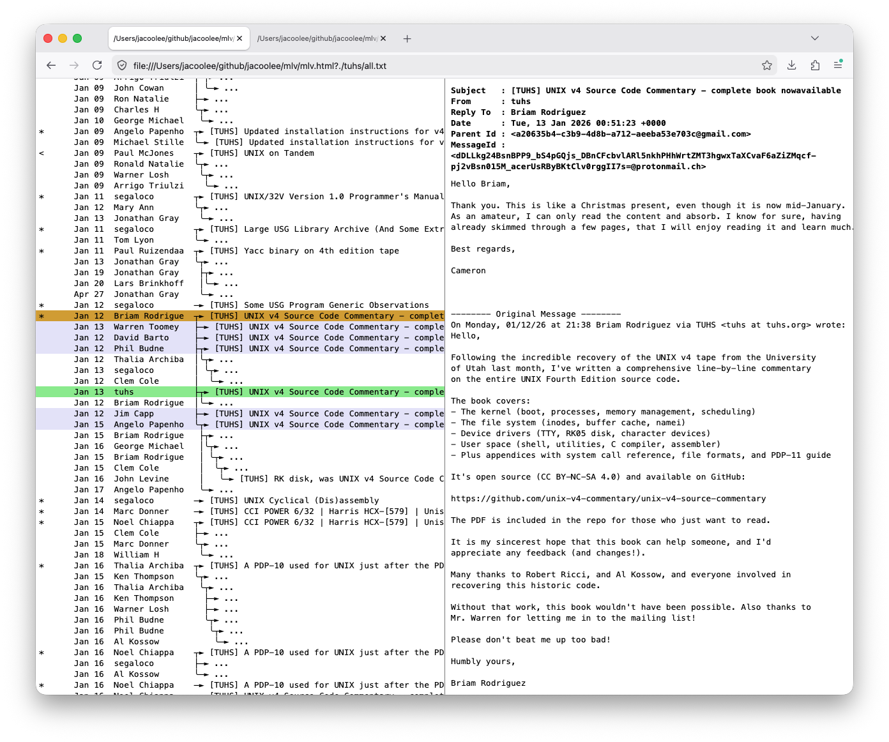
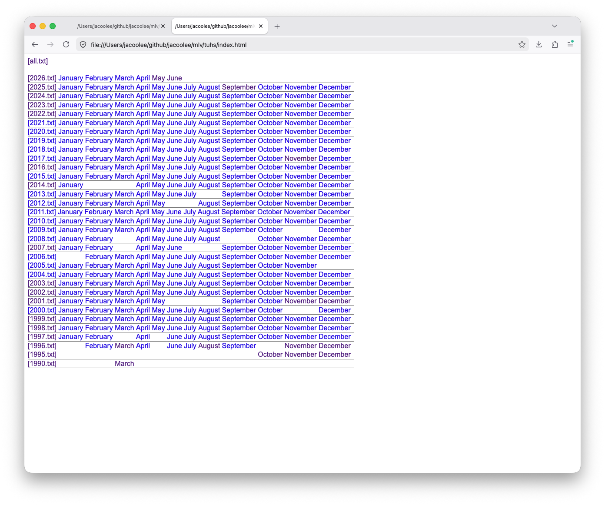

NAME
mlv - maillist viewer
USAGE
./mlv.html?{MAIL_LIST_FILE}
If using with local maillist file, ensure web browser's local file access ability is enabled.
EXAMPLE
./mlv.html?./tuhs/2026.txt
HOTKEYS
j - view next message
k - view previous message
p - view parent message
n - view child message
0 - view first message
9 - view last message
1-8 - view message at 1..8/10 percent of all messages
c - toggle configure dialog
DIAGNOSE
Check out ./tuhs/NOTE.txt
MARKER
< - is a reply, but parent message is not in thread
* - is the first message in thread (star[t])
$ - (Same) messageId occurs before
↳ - sub reply
SCREENSHOT
